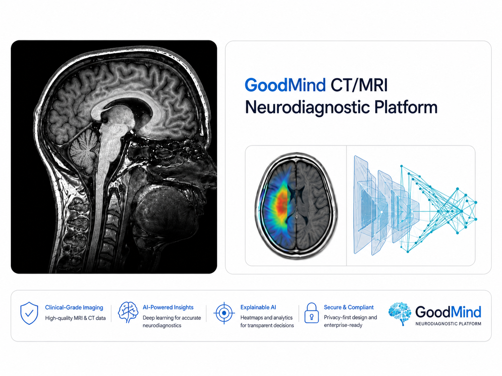

Medical Imaging
GoodMind CT/MRI Neurodiagnostic Platform
- CNN and 3D vision models for stroke, dementia and brain tumour classification from CT/MRI scans.
- Grad-CAM heatmaps and confusion-matrix analysis for explainable diagnostic-support outputs.
PyTorchResNet50VGG16Grad-CAMDICOMU-Net